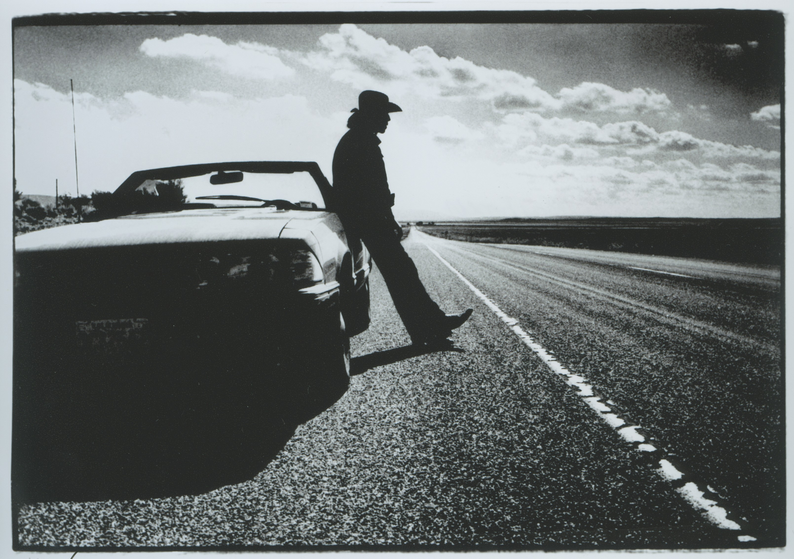

Tom Martinsen was born on 4 August 1943 in Tønsberg. He studied at the School of Photography and Documentary Film at Stockholm University from 1968 to 1971, under Swedish photographer Christer Strömholm. From 1972 he worked as a press photographer for Dagbladet, capturing decades of Norwegian and international history through his lens. In 1977 he was among the founders of Fotogalleriet in Oslo.
